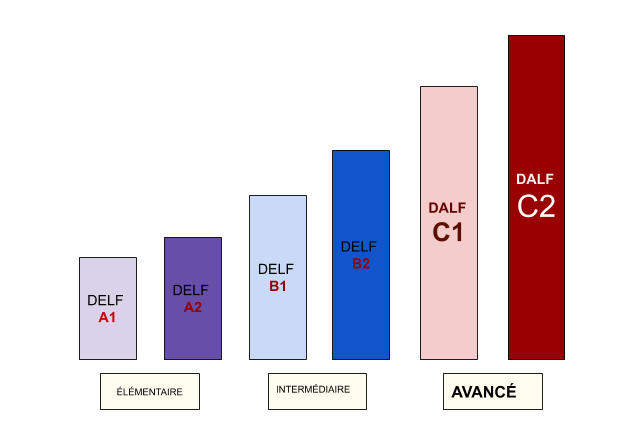

Quel est l'intérêt de faire C1-C2?
« La langue française est une femme. Et cette femme est si belle, si fière, si modeste, si hardie, touchante, voluptueuse, chaste, noble, familière, folle, sage, qu’on l’aime de toute son âme, et qu’on n’est jamais tenté de lui être infidèle. »
-Anatole France
Pourquoi faut-il s'intéresser aux niveaux avancés (DALF C1-C2) ?
Avant de répondre à cette question où je vais parler de nombreux avantages (dans les domaines : académique, professionnel et personnel) liées aux diplômes DALF C1-C2, je voudrais partager mes propres expériences en racontant une petite histoire. :)
C'était l’une des questions que je me suis posée en 2017 quand je ne pouvais pas décider si je devais ou non continuer avec les études de diplôme avancé du DALF C1.
Quand j’ai vu le format/ le sujet officiel de l’examen finale, cela m’a d’autant plus effrayée. Un examen de plus de quatre heures. Ouf !! Ce serait impossible de m’y concentrer ! Comme d’autres apprenant(e)s, il faudrait que je m'arrête ici et recherche plutôt un emploi modeste ou même commence à donner des cours privés (tutoring).
Et voilà! J’ai aussi fait des cours virtuels mais… !!!!
Même si j'avais de la confiance et de la motivation devant mes élèves, mes apprenant(e)s, je ressentais cette notion de perte comme si quelque chose manquait dans ma pédagogie, dans mon langage. De temps en temps, j’affrontais des situations où mes compétences linguistiques ne suffisaient pas pour convaincre les apprenants. Tel était le cas pendant l’un des cours où un étudiant scolaire a voulu discuter d’une activité de rédaction d’une synthèse pour participer à un concours académique. C'était vraiment difficile et un moment gênant pour moi !!
De même, lorsque j’ai rêvé de trouver un emploi de traductrice (français/anglais ou anglais/français) chez l’ONU, le premier critère était les acquis langagiers et l’association a rendu obligatoire d’avoir le niveau expérimenté (DALF C2) pour les francophones non-natifs.
(Avez-vous expérimenté de tels défis pendant votre parcours?? Si oui, n'hésitez pas à les partager avec nous dans la section : commentaires et à motiver d’autres apprenant(e)s par vos expériences.
De plus, continuez à lire pour être motivé(e) et persévérer à vos études de diplômes avancés)
Alors, il était devenu primordial pour moi de reprendre mes études et d’achever ces deux derniers niveaux de diplôme proposés par le CECRL.
Avec le but d’expliquer l’importance de l'acquisition complète d’une langue (en l'occurrence, la langue française), je rédige cet article pour expliciter la pléthore des avantages dans plusieurs domaines selon le but qui vous est propre.
1. Les avantages académiques
Entrer à l'université : Les personnes qui ont des projets, des rêves de s’inscrire dans les grandes universités françaises ou même canadiennes tels que l’Ecole Polytechnique, Université de Montréal, Université de Québec.
Possible de s’inscrire à l'Université en ayant le niveau B2 ou supérieur sans passer un test supplémentaire. Il faut avoir des connaissances prérequises même pour être considéré(e) pour l’inscription.
Faire de la recherche dans les différents domaines pour lesquels la France, le Canada et les autres pays francophones sont reconnus : le scientifique, l’agro-alimentation, l’automobile, la grande littérature de l'ère de Victor Hugo, de Molière, de Claude Simone.
La passion pour la recherche, pour la lecture va certainement vous pousser à continuer vos études des diplômes avancés en français.
2. Les avantages professionnels
Trouver un emploi bien rémunéré : Décrocher un bon job dans le domaine de recherche, de traduction avec l’aide de ces agences professionnelles telles que indeed, linkedin,
French jobs for me,
AppJobs
(Sans doute, l’expertise est le premier critère pour gagner ces emplois )
Profiter du revenu passif Étant donné que Covid-19 révolutionne le monde éducatif, cela vaudrait la peine de préparer vos cours d’enseignement et vendre sur les plateformes comme Udemy, Coursera, lancer votre chaîne sur YouTube ou même écrire un blog comme moi.
(Si vous n'avez pas une maîtrise de la langue ciblée et vous commettez des erreurs, personne ne vous suivra.)
Évaluer avec précision : devenir examinateur-correcteur du delf-dalf en suivant la formation
DILF.
(Pourrait-on évaluer les autres avec une exactitude sans connaissance complète?)
Travailler dans un secteur spécialisé: De nombreuses sociétés multinationales francophones, recherchent les professionnels plurilingues dans plusieurs secteurs: agroalimentaire, automobile, mécanique, industrie pharmaceutique…
(Ne pensez-vous pas que la maîtrise de la langue française non seulement favoriserait la crédibilité de votre CV mais aussi améliorerait votre rémunération surtout pendant cette ère de la mondialisation où les entreprises recherchent des candidats avec plusieurs acquis??)
3. Les avantages personnels
Développer un esprit critique : C’est le premier but avec lequel j’ai lancé mon blog. Dans l’apprentissage d’une langue étrangère, il ne s’agit pas que de découvrir, de nouveau, un dialecte, une culture, un patrimoine, une histoire, une pensée… Il est beaucoup plus que vous pourriez même imaginer.
« Développement d’un esprit critique face aux nouvelles tendances de la société. »
De sorte de se sensibiliser à ses habitudes. C’est tout ce dont j’ai bénéficié en suivant les cours DELF – DALF et même, en atteignant mon but de réussir le diplôme du plus haut niveau : DALF C2* à la première tentative.
Ressentir la joie de la victoire: Une fois qu’on a maîtrisé la langue de Molière en tant que étranger(ère), il s’agit d’une acquisition très originale et distincte.
Acquérir une expression précise : Avec le déferlement de l’avancement numérique, c’est le logiciel qui nous conseille nos prochains mots pendant l'écriture d’un message, d’un courriel. Vous souvenez-vous des applications commes le clavier Google, grammarly, bonpatron qui nous corrigent automatiquement?? Ne pensez-vous pas que dû à cette automatisation, on ait oublié la façon de s’exprimer indépendamment?
Ici, l’entrainement dur pendant la préparation de ces haut-niveaux jouerait un grand rôle en raffinant votre expression.
4. Les autres atouts
S’installer à l’étranger :Sans doute, certains de nous rêvent de l’immigration (au Canada, en France, aux pays d’Afrique) soit pour une meilleure qualité de vie soit pour des raisons financières, personnelles.
Et la! C’est la haute connaissance du français qui est requis.
Être à la mode :La compréhension des petits aux grands détails de la particularité du luxe parisien nécessite sans doute une meilleure connaissance de la langue gauloise.
L’amour du cinéma et de la gastronomie française.
Alors, essayez de répondre, maintenant, à cette question posée par l’homme dans l’image au-dessous!!!
PARTIE - FAQs
Qu’est-ce que le DALF ?
- Le DELF et le DALF sont les diplômes officiels délivrés par le ministère français de l'éducation nationale, pour certifier les compétences en français des candidats étrangers et des Français originaires d'un pays non francophone et non titulaires d'un diplôme de l'enseignement secondaire ou supérieur public français.
Le DALF est un Diplôme Approfondi de Langue Française et se compose de 2 diplômes indépendants, correspondant aux deux niveaux du Cadre européen de référence pour les langues(CECRL)
| CECRL |
DALF |
Utilisateur |
| C1 |
DALF C1 |
expérimenté |
| C2 |
DALF C2 |
expérimenté |

Comment puis-je comprendre mon niveau de langue et m'auto-évaluer afin de déchiffrer si je suis prêt(e) pour m'entraîner au DALF ?
Que signifie le niveau DALF C1-C2 ?
- DALF CI -
Un utilisateur qui a atteint ce niveau peut facilement : comprendre une grande gamme de textes longs et exigeants, ainsi que saisir des significations implicites, s’exprimer spontanément et couramment sans trop apparemment devoir chercher ses mots, utiliser la langue de façon efficace et souple dans sa vie sociale, professionnelle ou académique et s’exprimer sur des sujets complexes de façon claire et bien structurée et manifester son contrôle des outils d’organisation, d’articulation et de cohésion du discours.
Pour plus d’informations (comme le format de l’examen, les conseils pour le réussir, les sujets de DALF C1) sur ce niveau, vous pourriez cliquer
ici.
- DALF C2 -
Un utilisateur qui a atteint ce niveau peut facilement : comprendre sans effort pratiquement tout ce qu’il/elle lit ou entend, restituer faits et arguments de diverses sources écrites et orales en les résumant de façon cohérente, s’exprimer spontanément, très couramment et de façon précise et rendre distinctes de fines nuances de sens en rapport avec des sujets complexes.
Pour plus d’informations (comme le format de l’examen, les conseils pour le réussir, les sujets de DALF C2) sur ce niveau, vous pourriez cliquer
ici.
Où se déroule les examens du DALF C1-C2 ?
Le DALF est-il valable partout ? Pour combien de temps, le certificat du DALF (dans le cas ou vous avez réussi) est-il valable ?
- Oui. Le DALF bénéficie de la reconnaissance de tous les diplômes officiels délivrés par le ministère français de l'Education nationale.
Et oui, le certificat du DALF (C1/C2) est valable toute la vie.
Quel est le format et le coût de l’examen DALF C1 - C2 ?
- Vous pourriez vous renseigner sur le format et le coût de l’examen sur le site officiel de ciep ici.
Comment ai-je pu réussir au DALF C1 et DALF C2 à la première tentative et obtenir le diplôme ? Quel était mon parcours? Comment ai-je pu rester motivée pendant la préparation?
- Ce sont quelques questions auxquelles chaque apprenant(e) s’intéresse.
Soyez patient(e) mes cher(e)s lecteur(se)s !!! J’ai hâte de partager avec vous toutes ces informations dans l’article à venir dans les semaines prochaines.
Quels sont les meilleurs instituts pour apprendre le français ?
- Il en existe plusieurs. Mais, on recommande les sites webs comme french today, babbel, mosalingua pour rechercher un professeur selon vos besoins
Crédits pour les sources :